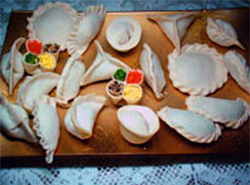
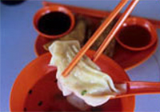

Логотип
HOT PELMEN
Традиции
Oдной из главных и самых распространенных пельменных традиций является лепка «счастливого пельменя». Для изготовления такого пельменя вместо обычного фарша используется какой-либо другой продукт или даже предмет, например, монетка или пуговица. Каждая из этих начинок имеет свое толкование. Так человек съевший пельмень с перцем встретит любовь, вкусивший пельмень с зеленью будет наполнен радостью, тому, кому попадется цельный тестяной пельмень, ждет счастье, а счастливчику нашедшему пельмень с сахаром предстоит прожить легкий и удачный год. Оказавшаяся же в пельмене монетка, естественно, предвещает богатство.
Другая прекрасная пельменная традиция пришла к нам из Сибири. Сибирские пельмени нужно было подавать на стол только в большой посуде. Это означало благоприятное расположение хозяина к гостям и говорило о том, что он хочет, чтобы сидящие за столом задержались в его доме на как можно более длительное время. Если же хозяин подавал пельмени каждому порционно, это могло быть расценено, как желание хозяина поскорее распрощаться с гостями.
А вот древние уральцы придавали пельменям ритуальное значение. Это блюдо было воплощенным символом принесения в жертву всех видов скота, который был у людей. Поэтому фарш для уральских пельменей делается из трех видов мяса, где каждому отведен свой строго определенный процент. Так для того чтобы изготовить килограмм фарша, нужно взять 45% говядины, 35% баранины и 20% свинины.
Еще одна китайская пельменная традиция связана с суеверной привязанностью жителей Поднебесной к числам. Так, человека съевшего два пельменя ждала двойная радость. Для обретения счастья нужно было проглотить три, шесть или девять пельменей. Четыре съеденных пельменя обещали богатый год. Пять пельменей съедали крестьяне и фермеры, желающие обеспечить хороший урожай. Семь пельменей сулили благополучие, а восемь вели к успехам в бизнесе. Те же, кто в состоянии был осилить десять пельменей, могли рассчитывать на абсолютное счастье, удачу и довольство. Здесь стоит упомянуть, что китайские пельмени в разы больше наших, а значит, съесть десяток изделий для полного счастья было действительно непростым делом.